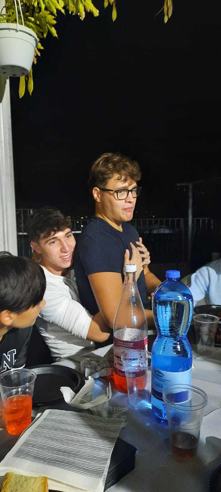

L'APPRODO SU TIK TOK
Prima di iniziare la sua carriera come artista, Alessandro è stato un influencer di grande successo, come mostra il suo canale su Tik Tok, aperto verso la fine del quarto superiore e pieno di contenuti di vario genere. Oltre a foto senza maglietta di fronte alle quali non si può restare indifferenti, visti i suoi proverbiali addominali scolpiti, il futuro cantante pubblica anche video nei quali (con la presenza del suo gatto Biscottina sullo sfondo) mostra il suo sguardo profondo e seducente con musica sullo sfondo, mentre in altri video si lascia addirittura andare a considerazioni intellettualmente elevate, come il celebre:
Se l'aborto è un omicidio, allora la sega è uno sterminio.
FOTOMODELLO SU INSTAGRAM
Tutt'oggi, oltre che con gli ormai celebri video delle sue canzoni, Alek non smette mai di stupire i suoi fan con la pubblicazione di numerose foto dal carattere sensuale, in particolar modo che ritraggono le sue poderose spalle; per questo tipo di contenuti, Alek ha addirittura ricevuto delle proposte molto indecenti dal Sud Italia... Una delle sue foto più celebri (e irresistibili allo sguardo) è sicuramente quella postata la mattina in cui Alek si trovava ai 100 giorni all'esame di maturità, che ritrae il cantante allo specchio sdraiato sul letto indossando solo un paio di mutande nere; alcune malelingue sostengono che il destinatario della foto fosse il suo compagno di stanza Davide Para, di fronte al quale Alessandro si sarebbe smutandato più volte durante il breve soggiorno nel casale...
ALEK OMOSESSUALE?
E' doveroso infine segnalare le numerose insinuazioni circa l'identità sessuale di Alek (argomento affrontato anche nella pagina dedicata al rapporto con i trans): l'autore del sito si schiera decisamente dalla parte di coloro che ne sostengono l'omosessualità, adducendo come argomenti, oltre alle presunte avances con l'amico Davide ai 100 giorni, anche un particolare interesse per le persone che scelgono di cambiare il proprio sesso, nonché numerosi atteggiamenti degni di nota con un altro amico, il muscoloso Samuele Gubbiotti: sempre l'autore del sito ha colto i due in questa inequivocabile foto, scattata nella località di Colle Pizzuto: 